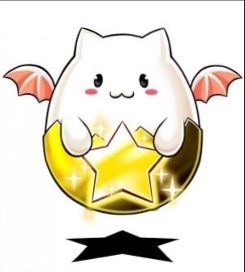
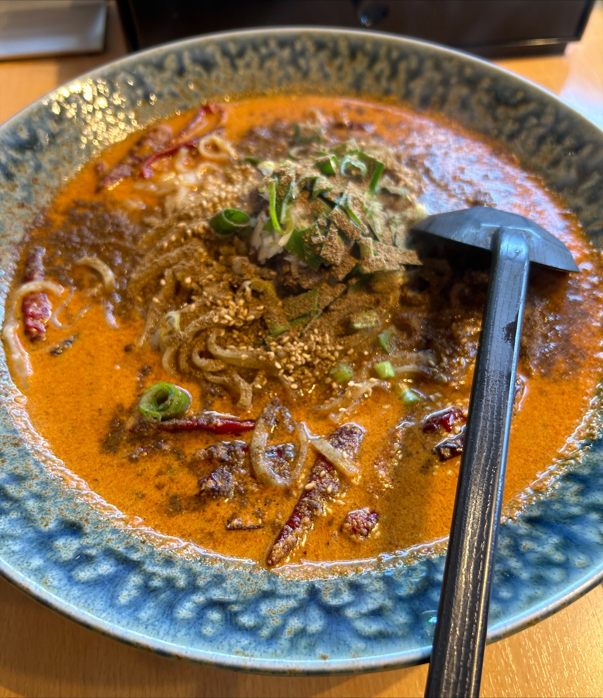
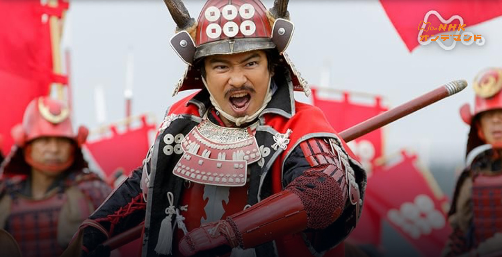

マイブームはパズドラです!パズドラは人気のパズルRPGで、モンスターを集めて育成し、チームを編成してクエストに挑みます。 ランク:1027 ID:

ラーメン屋によく行きます!ラーメンは日本全国で様々なスタイルがあり、特にこだわりのあるお店を巡るのが好きです。 よく行くお店は『三国志』という宇治にあるお店です。

おすすめは『真田丸』です!『真田丸』は戦国時代の武将・真田信繁（幸村）を描いた大河ドラマで、その歴史と戦略が見どころです。 特に最終話らへんの幸村の戦略が面白かったです。